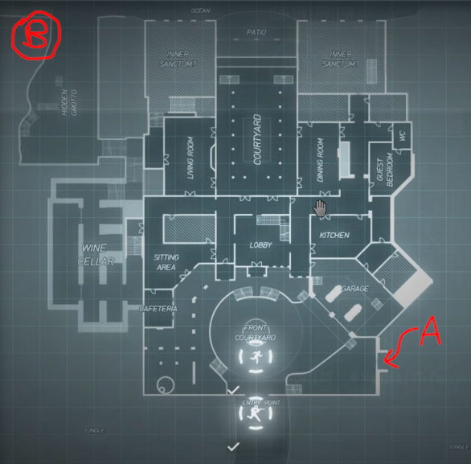

Entrata
Gli orsi iniziano fuori dal cancello. Ai lati della strada sono parcheggiate moltissime auto di lusso. Appena fuori dal cancello ci sono 4 guardie mascherate da orsi vestite in smoking che controllano una fila di tre treruote caricati di fiori di tutti i tipi. Il carico è nascosto da un telo marrone. I fiori vengono lasciati appena dentro il giardino, ancora coperti. 2 guardie all'interno spostano i fiori verso il salotto.
Appena fuori dal cancello c'è anche una piccola bancarella sotto un gazebo operata da una nonnina. Ci sono maschere di ogni tipo e cappelli di ogni tipo.

Giardino
Al lato c'è un piccolo cancelletto A, protetto da una sola guardia. Da qui si può facilmente entrare nel garage, la cui serranda è protetta da un piccolo keypad elettronico. Nel garage c'è anche una piccola porta della sala delle telecamere, anche questa protetta da un piccolo keypad.
Luna di Miele
La Luna di Miele si trova nella cucina. Fuori dalla cucina ci sono 6 guardie, 2 per porta. Lo chef è molto particolare e non vuole essere disturbato dirante gli ultimi ritocchi.
Grotta
Se fanno tutto il perimetro trovano un piccolo molo, che da proprio nella grotticella nascosta B La grotta porta nella cella del vino, e da lì si può salire. Nella cella del vino salgono e scendono le guardie per mettere i fiori. Notano anche una porta blindata e protetta molto molto bene, ci sono 2 scanner oculari... e una serratura "di sicurezza". La porta blindata porta nelle rovine Maia, in cui hanno intrappolato la leggendaria Ape Maia per controllare tutte le altre api, che sono schiavizzate per produrre miele in enormi quantità.
Rovine Maia
È tipo una ziqqurat interrata che in cima splende come un faro, e su tutti i gradini ci sono le api operaie che vanno tra in fiori e lavorano costantemente. L'Ape Maia è tenuta prigioniera in un macchinario sotto una campana di vetro in cima alla ziqqurat. Il macchinario spara una cosa elettrica alla campana di vetro. Per liberarla devono salire gradino per gradino la ziqqurat e, arrivati in cima, evitare le trappole poste. Prima, evitare la luce, poi un grande fosso, poi delle trappole che se pestate sparano frecce e poi se tolgono l'ape, un enorme masso li rincorre. Possono comunque distruggere il macchinario.